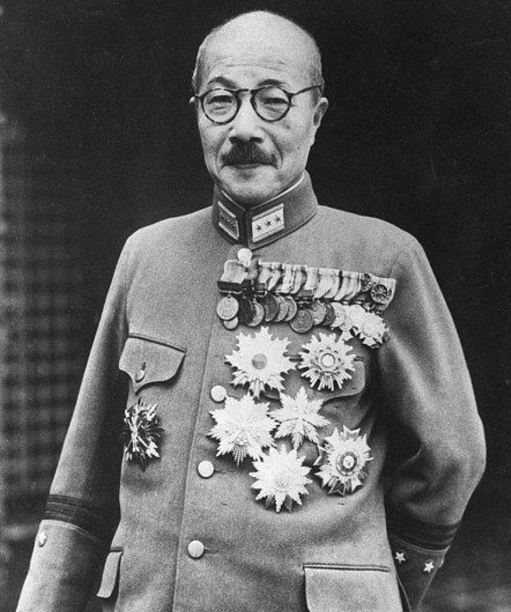

Hideki Tōjō (1884–1948) est un général de l’armée impériale japonaise et Premier ministre du Japon de 1941 à 1944. Figure majeure du militarisme japonais, il joue un rôle central dans l’expansion du Japon en Asie et dans l’entrée en guerre contre les États-Unis.
Tōjō devient Premier ministre en octobre 1941, à un moment où les tensions avec les États-Unis sont à leur maximum. Il approuve l’attaque de Pearl Harbor le 7 décembre 1941, déclenchant la guerre du Pacifique. Sous son gouvernement, le Japon mène des offensives rapides en Asie du Sud-Est et dans le Pacifique, mais subit ensuite de lourdes défaites. En 1944, après la perte des Mariannes, Tōjō est contraint de démissionner. Arrêté après la guerre, il est jugé et exécuté en 1948.
Tōjō est étudié comme l’un des dirigeants les plus importants — et les plus controversés — du Japon impérial. Son rôle dans l’entrée en guerre contre les États-Unis et dans la conduite du conflit en fait une figure incontournable de l’histoire du Pacifique.